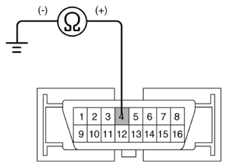

LEMON Manuals
: Even more car manuals for everyone: 1960-2025
Home
>>
Hyundai
>>
2022
>>
Elantra N Line, Standard Trans
>>
Repair and Diagnosis
>>
Brakes
>>
Anti-Lock Brakes
>>
Electronic Stability Control (ESC) System (Except HEV)
>>
Troubleshooting
>>
Communication With KDS Is Not Possible (Communication With ABS Only Is Not Possible.)
>>
Inspection procedures
>>
Check for poor ground
Check for poor ground
Check for continuity between terminal 4 of the data link connector and ground point.
Is the electric current applied between groundings?
YES
Replace the ESP control module and recheck.
NO
Repair an open in the wire or poor ground

Courtesy of HYUNDAI MOTOR AMERICA